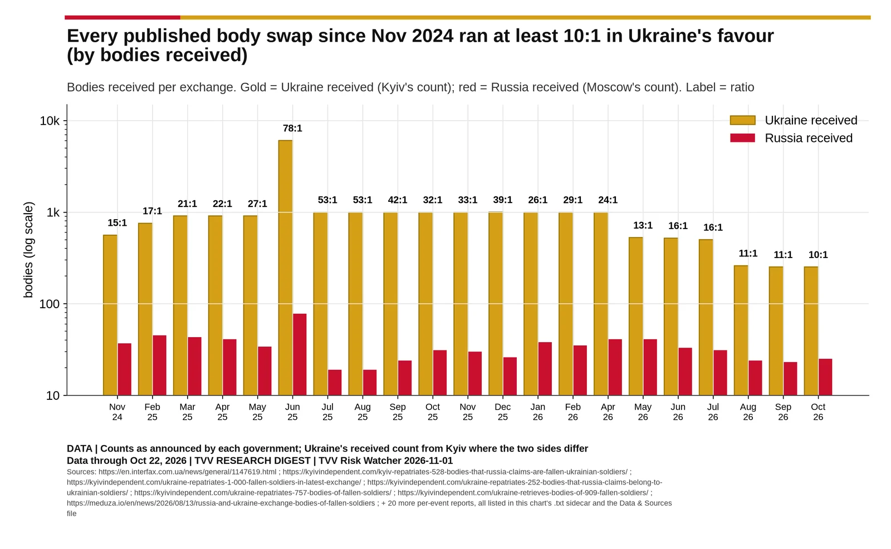
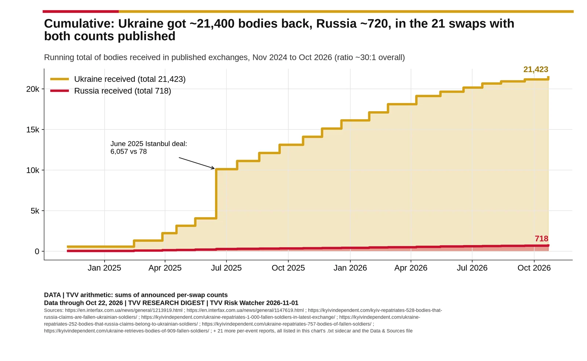
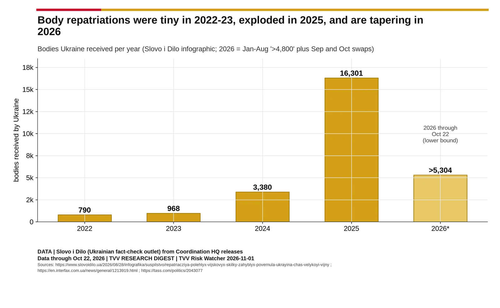
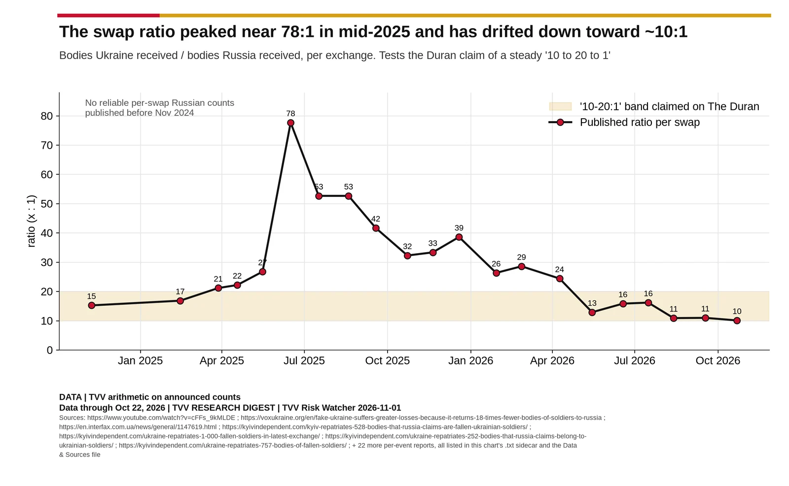

Body Exchanges
The one bilateral number both governments publish: bodies handed back in each swap since November 2024, cumulative totals, yearly returns to Ukraine, and the per-swap ratio. A swap counts bodies each side holds, not the deaths each side suffered.

Source: https://en.interfax.com.ua/news/general/1147619.html https://kyivindependent.com/kyiv-repatriates-528-bodies-that-russia-claims-are-fallen-ukrainian-soldiers/ https://kyivindependent.com/ukraine-repatriates-1-000-fallen-soldiers-in-latest-exchange/ https://kyivindependent.com/ukraine-repatriates-252-bodies-that-russia-claims-belong-to-ukrainian-soldiers/ https://kyivindependent.com/ukraine-repatriates-757-bodies-of-fallen-soldiers/ https://kyivindependent.com/ukraine-retrieves-bodies-of-909-fallen-soldiers/ https://meduza.io/en/news/2026/08/13/russia-and-ukraine-exchange-bodies-of-fallen-soldiers https://tass.com/defense/2148309 https://tass.com/politics/2043077 https://www.aa.com.tr/en/eurasia/russia-ukraine-exchange-bodies-of-fallen-troops-in-latest-swap/4026261 https://www.aa.com.tr/en/eurasia/russia-ukraine-exchange-remains-of-soldiers/3970959 https://www.aa.com.tr/en/eurasia/russia-ukraine-hold-exchange-of-nearly-300-bodies-of-fallen-soldiers/4097086 https://www.aa.com.tr/en/eurasia/ukraine-says-it-received-bodies-of-528-fallen-soldiers-from-russia/3939372 https://www.bbc.com/news/articles/cg7ed4rp7x5o https://www.bbc.com/news/articles/cgeqddw1v1do https://www.bbc.com/news/articles/cp9jl8vxdy9o https://www.forbes.ru/society/548470-rossia-i-ukraina-obmenalis-telami-pogibsih-voennyh-po-formule-1000-na-31 https://www.pravda.com.ua/eng/news/2025/05/16/7512522/ https://www.rbc.ru/rbcfreenews/672e19709a7947d763c34c4e https://www.reuters.com/business/aerospace-defense/ukraine-says-it-received-1000-bodies-russia-2025-11-20/ https://www.reuters.com/world/europe/russia-ukraine-carry-out-new-exchange-bodies-2025-12-19/ https://www.reuters.com/world/europe/russia-ukraine-exchange-more-bodies-war-dead-kremlin-aide-says-2025-07-17/ https://www.rferl.org/a/ukraine-russia-exchange-fallen-soldiers-bodies-november-2024/33195044.html https://www.themoscowtimes.com/2025/02/14/russia-and-ukraine-exchange-more-than-800-soldiers-bodies-a88017 https://www.themoscowtimes.com/2025/03/28/ukraine-and-russia-exchange-nearly-1k-bodies-of-fallen-soldiers-a88526 https://www.themoscowtimes.com/2025/04/18/russia-and-ukraine-exchange-nearly-1k-bodies-of-killed-soldiers-a88794 https://www.themoscowtimes.com/2025/09/18/russia-and-ukraine-exchange-1k-bodies-of-soldiers-a90564

Source: https://en.interfax.com.ua/news/general/1213919.html https://en.interfax.com.ua/news/general/1147619.html https://kyivindependent.com/kyiv-repatriates-528-bodies-that-russia-claims-are-fallen-ukrainian-soldiers/ https://kyivindependent.com/ukraine-repatriates-1-000-fallen-soldiers-in-latest-exchange/ https://kyivindependent.com/ukraine-repatriates-252-bodies-that-russia-claims-belong-to-ukrainian-soldiers/ https://kyivindependent.com/ukraine-repatriates-757-bodies-of-fallen-soldiers/ https://kyivindependent.com/ukraine-retrieves-bodies-of-909-fallen-soldiers/ https://meduza.io/en/news/2026/08/13/russia-and-ukraine-exchange-bodies-of-fallen-soldiers https://tass.com/defense/2148309 https://tass.com/politics/2043077 https://www.aa.com.tr/en/eurasia/russia-ukraine-exchange-bodies-of-fallen-troops-in-latest-swap/4026261 https://www.aa.com.tr/en/eurasia/russia-ukraine-exchange-remains-of-soldiers/3970959 https://www.aa.com.tr/en/eurasia/russia-ukraine-hold-exchange-of-nearly-300-bodies-of-fallen-soldiers/4097086 https://www.aa.com.tr/en/eurasia/ukraine-says-it-received-bodies-of-528-fallen-soldiers-from-russia/3939372 https://www.bbc.com/news/articles/cg7ed4rp7x5o https://www.bbc.com/news/articles/cgeqddw1v1do https://www.bbc.com/news/articles/cp9jl8vxdy9o https://www.forbes.ru/society/548470-rossia-i-ukraina-obmenalis-telami-pogibsih-voennyh-po-formule-1000-na-31 https://www.pravda.com.ua/eng/news/2025/05/16/7512522/ https://www.rbc.ru/rbcfreenews/672e19709a7947d763c34c4e https://www.reuters.com/business/aerospace-defense/ukraine-says-it-received-1000-bodies-russia-2025-11-20/ https://www.reuters.com/world/europe/russia-ukraine-carry-out-new-exchange-bodies-2025-12-19/ https://www.reuters.com/world/europe/russia-ukraine-exchange-more-bodies-war-dead-kremlin-aide-says-2025-07-17/ https://www.rferl.org/a/ukraine-russia-exchange-fallen-soldiers-bodies-november-2024/33195044.html https://www.themoscowtimes.com/2025/02/14/russia-and-ukraine-exchange-more-than-800-soldiers-bodies-a88017 https://www.themoscowtimes.com/2025/03/28/ukraine-and-russia-exchange-nearly-1k-bodies-of-fallen-soldiers-a88526 https://www.themoscowtimes.com/2025/04/18/russia-and-ukraine-exchange-nearly-1k-bodies-of-killed-soldiers-a88794 https://www.themoscowtimes.com/2025/09/18/russia-and-ukraine-exchange-1k-bodies-of-soldiers-a90564

Source: https://www.slovoidilo.ua/2026/08/28/infografika/suspilstvo/repatriacziya-polehlyx-vijskovyx-skilky-zahyblyx-povernula-ukrayina-chas-velykoyi-vijny https://en.interfax.com.ua/news/general/1213919.html https://tass.com/politics/2043077

Source: https://www.youtube.com/watch?v=cFFs_9kMLDE https://voxukraine.org/en/fake-ukraine-suffers-greater-losses-because-it-returns-18-times-fewer-bodies-of-soldiers-to-russia https://en.interfax.com.ua/news/general/1147619.html https://kyivindependent.com/kyiv-repatriates-528-bodies-that-russia-claims-are-fallen-ukrainian-soldiers/ https://kyivindependent.com/ukraine-repatriates-1-000-fallen-soldiers-in-latest-exchange/ https://kyivindependent.com/ukraine-repatriates-252-bodies-that-russia-claims-belong-to-ukrainian-soldiers/ https://kyivindependent.com/ukraine-repatriates-757-bodies-of-fallen-soldiers/ https://kyivindependent.com/ukraine-retrieves-bodies-of-909-fallen-soldiers/ https://meduza.io/en/news/2026/08/13/russia-and-ukraine-exchange-bodies-of-fallen-soldiers https://tass.com/defense/2148309 https://tass.com/politics/2043077 https://www.aa.com.tr/en/eurasia/russia-ukraine-exchange-bodies-of-fallen-troops-in-latest-swap/4026261 https://www.aa.com.tr/en/eurasia/russia-ukraine-exchange-remains-of-soldiers/3970959 https://www.aa.com.tr/en/eurasia/russia-ukraine-hold-exchange-of-nearly-300-bodies-of-fallen-soldiers/4097086 https://www.aa.com.tr/en/eurasia/ukraine-says-it-received-bodies-of-528-fallen-soldiers-from-russia/3939372 https://www.bbc.com/news/articles/cg7ed4rp7x5o https://www.bbc.com/news/articles/cgeqddw1v1do https://www.bbc.com/news/articles/cp9jl8vxdy9o https://www.forbes.ru/society/548470-rossia-i-ukraina-obmenalis-telami-pogibsih-voennyh-po-formule-1000-na-31 https://www.pravda.com.ua/eng/news/2025/05/16/7512522/ https://www.rbc.ru/rbcfreenews/672e19709a7947d763c34c4e https://www.reuters.com/business/aerospace-defense/ukraine-says-it-received-1000-bodies-russia-2025-11-20/ https://www.reuters.com/world/europe/russia-ukraine-carry-out-new-exchange-bodies-2025-12-19/ https://www.reuters.com/world/europe/russia-ukraine-exchange-more-bodies-war-dead-kremlin-aide-says-2025-07-17/ https://www.rferl.org/a/ukraine-russia-exchange-fallen-soldiers-bodies-november-2024/33195044.html https://www.themoscowtimes.com/2025/02/14/russia-and-ukraine-exchange-more-than-800-soldiers-bodies-a88017 https://www.themoscowtimes.com/2025/03/28/ukraine-and-russia-exchange-nearly-1k-bodies-of-fallen-soldiers-a88526 https://www.themoscowtimes.com/2025/04/18/russia-and-ukraine-exchange-nearly-1k-bodies-of-killed-soldiers-a88794 https://www.themoscowtimes.com/2025/09/18/russia-and-ukraine-exchange-1k-bodies-of-soldiers-a90564